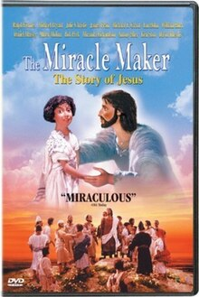
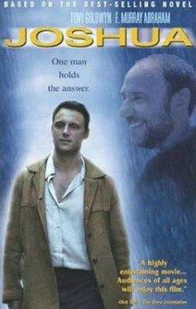
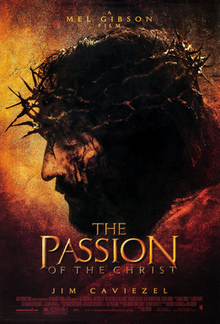
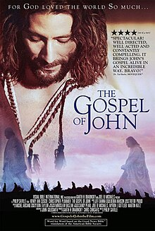

Course: Jesus in the Movies
Lecture #10: Recent Portrayals & Conclusion
THE MIRACLE MAKER

In March 1995, a team from Wales (Cartwyn Cymru) and Russia spent a week in the Holy land visiting areas in which Jesus ministered. This team got to know each other, which was good because it took 4 years to produce this film. During that week, the idea of seeing Jesus' life thru the eyes of Jarius' daughter was conceived by Murry Watts, the screenwriter. The film was jointly directed by Stanislov Sokolov and Derek Hayes.
SCENE 2: SHOWS BOTH JARIUS, HIS DAUGHTER, JESUS AND MARY MAGDALENE, stop when Jesus heads out the gate, 4 min
The script went thru 8 drafts before everyone was happy with it. Character designs were faxed incessantly between Cardiff, Wales and Moscow until all were satisfied. In Moscow, over 30 locations were reproduced of the holy land 2000 years ago and 250 12" latex model marionettes were built, each with a skeleton or "armature" inside them.
In the hands of the Russian animators the models became lifelike when moved 24 times a second. Cities, villages, boats, trees, domestic utensils, animals--all were researched and manufactured with care and precision.
There were monthly trips to Moscow for 3 years by the overall director and producer, Derek Hayes and Naomi Jones, to meet with the Russian counterparts. After 3 years the footage was complete and in March 1999 it was ready.
This film is ostensibly a dramatic recreation of the events of Jesus adult life but is surprisingly much more than that. It is a triumph of 3D animation. However, to offset the world of the parables as Jesus tells them, the animators chose to set in 2-D pieces, and the effect is not jarring but is quite smooth and dreamlike.
SCENE 13 GOOD SAMARITAN, 5 MIN
Enough cannot be said about the films production values. The crowd scenes alone are amazing and worth the price of the disk, as one critic comments. Critics say there is real art here. The mixture of 2-D and 3-D is effective and attractive, as well as fun to watch.
It has been pointed out that if anything, the animation and scripting are a wee bit too politically correct with the real passion and force of the scenes almost edited right out of them in order to avoid offending anyone. So at times the scenes are overly subdued, even dismal.
While Christ's life is not humorous, his message of love and joy is almost lost by the focus on his pain and the suffering of those around him. The scene where Jesus gives in to anger and tosses the moneylenders from the temple is even tame. Ralph Fiennes does his best to show Jesus as a social revolutionary, but the passion just isn't there.
SHOW SCENE 15 "DEN OF THEIVES' till man says "teacher" 3 MIN
A few liberties were taken with the biblical plot, but only in small things. Mary Magdalene's mental instability is played up; she's called "Mad Mary" by the villagers. This is actually more accurate than the idea of her being a prostitute which developed in the 6th century. The only thing we know about Mary was that Jesus cast 7 demons out of her. SCENE 9 1:10 (ONLY IF TIME)
There is a stellar cast of voices and they do a good job of bringing the dolls to life and making them seem real and emotional, they even blink. Overall then, this is a fine work of animation art. Total scenes = 13:10
JOSHUA (2002)

This film is adapted from the novel written by Father Joseph Girzone by screenwriter Brad Mirman and Keith Giglio and is a model of how to do a religious film that avoids "preachiness" so that the situations and people appear lifelike and with some humor. It definitely meets professional standards.
SHOW TRAILOR UNDER "FEATURES" 2:08
Jon Purdy describes this film as a spiritual western about a stranger who comes to a small town and changes the people thru compassion that is revealed to them in various ways.
Tony Goldwyn as Joshua is a woodcarver who does random acts of kindness. Seeing that the black communities church has been ruined beyond repair by a storm he sets about tearing it down and rebuilding it from scratch. It's not long before the entire town pitches in to help, including the kindly assistant priest, Father Pat (played by Kurt Fuller), of the local Catholic church.
The townspeople begin to realize they are experiencing a sense of community as never before. However, Father Tardone, (played by F. Murry Abraham) and Father Pat's superior, even commissions Joshua to sculpt a likeness of St. Peter for the church. Father Tardone is an austere, formal man and a rigid church traditionalist who was more at home in the Vatican.
After Joshua performs a miracle during a revival, Tardone begins seeing him as a real threat, even a false prophet.
SCENES 14-15, to "do you understand me Father Hayes" 7:40
As uptight and negative as Father Tardone can be, he is undeniably a conscientious, well-meaning man who is right to be concerned that Joshua may well be some kind of charlatan whose increasing sway over the townspeople alarms him--just as he is ultimately wrong to be so stubbornly close-minded & unloving.
Goldwyn never loses sight of Joshua's humanity or his humility, and therefore never seems an insufferable paragon. Fuller has the film's best role as a sometimes klutzy and tactless man of God who grows in assurance and poise as he increasingly goes against Father Tardone's attitudes.
Tardone himself is a complex figure, and Abraham illuminates him with compassion. Giancarlo Giannini, another accadamy award winner, makes a splendid pope in a sequence filmed in Rome.
Show: the last sequence SCENE 23 Thru meeting w/pope 9 min
This film, however, suffers from the curse of so many films from religiously oriented production companies: A gratuitously gooey violin and harmonica score that doggedly underlines most of the action in the most obvious, heavy-handed way. It also has an overlay of Christian "rock" which is a bid to appeal to the younger generation. The fact that Joshua is not "done in" by its music, however, attests to its innate strength.
Total @ 19 min.
THE PASSION OF THE CHRIST 2004 Mel Gibson

The Passion is a relatively well-done movie about the last 12 hours of Jesus life and in spite of the violence, had wide appeal. However, the film is neither good theology or historically accurate. It is a filming of Mel Gibson's own theology based on the 14 stations of the cross.
A more serious problem is the markedly anti-Jewish nature of the film relying on the New Testament gospels as if they were historical sources which put the blame for Jesus' death on the Jewish leadership.
Instead of seeing the anti-Jewishness as a late first century conflict between the Christians and Jews. Jesus was put to death by the Romans because of his nationalistic efforts (riding into Jerusalem was what the descendants of David did to become king). Pilate is portrayed as a good guy and at the end of the film, the temple is destroyed showing God's judgement on the Jews for rejecting Jesus. Thus, the film perpetuates the myth of the Jews as "Christ killers."
The film also presents a horrendous picture of the nature of God. The extreme violence shown throughout the film is "required" by God in order to forgive the sins of the world, since all humans deserve such brutality. Robert Funk, founder of the Jesus Seminar commented "what in the world has Mel Gibson done in his life that he feels so guilty he has to make a godawful film like that? Here's my bottom line--this movie will set Christianity back 500 years. I think it's that bad."
Funk concluded that the movie tells us a lot more about Mel Gibson than it does about Jesus.
W. Barnes Tatum says it is "two hours of pain that seem like 12." the portrayal of Jesus is as blood sacrifice based on Isaiah 53.
The film opened on Ash Wednesday 2004 and was a phenomenon even though having a R rating. It recovered its production costs the first day.
Ebert and Roper gave it two thumbs way up. the Boston globe called it a profoundly medieval movie"
The Catholic church gave it an A-III rating meaning adult only. They defended Gibson from the anti-Jewish sentiment and called on all Catholics to recall the Vatican 2 statements absolving the Jews.
Evangelical protestants were enthusiastic even though it was clearly a conservative roman catholic viewpoint. Christianity Today called it "lethal suffering: that the film showed Christ's humanity like no other film before."
The Christian century said: "You'll never see a more violent movie than this one with sadistic soldiers and pools of blood."
Several rabbis felt that there should have been more effort by the catholic bishops to condemn the antisemitism of the film and Commonweal, a lay catholic magazine, had a lead article by Rabbi Greenberg stating just this. another article in the same issue pointed out that the bishops did distribute teachings of Vatican II about Jewish/Christian relations.
Show the one scene that is not violent in which a flashback shows Jesus "inventing" the higher table and chair. (scene 7, @3 min.)
NOTE: Text in Highlight is Optional
The Gospel of John (2003 film)

The Gospel of John is a 2003 movie that is the story of Jesus' life as recounted by the Gospel of John. It is a motion picture that has been adapted for the screen on a word-for-word basis from the American Bible Society's Good News Translation Bible. This three-hour epic feature film follows John's Gospel precisely, without additions to the story from other Gospels, nor omission of complex passages.
This film was created by a constituency of artists from Canada and the United Kingdom, along with academic and theological consultants from around the world. The cast was-selected primarily from the Stratford Festival of Canada and Soulpepper Theatre Company, as well as Britain's Royal Shakespeare Company and Royal National Theatre. The musical score, composed by Jeff Danna and created for the film, is partially based on the music of the Biblical period. The film was produced by Visual Bible International.
The film is narrated by Christopher Plummer and stars Peruvian actor Henry Ian Cusick as Jesus. Others cast include British actors Stuart Bunce (John), Richard Lintern (Leading Pharisee) Scott Handy (John the Baptist), Lynsey Baxter (Mary Magdalene), and Canadian actors Diego Matamoros (Nicodemus), Stephen Russell (Pilate), Daniel Kash (Simon Peter), Cedric Smith (Caiaphas) and Nancy Palk (Samaritan Woman).
The film was directed by Philip Saville and co-produced by Canadian producer Garth Drabinsky and British producer Chris Chrisafis.
Executive producers were Sandy Pearl, Joel B. Michaels, Myron Gottlieb and Martin Katz
Also involved were screenwriter John Goldsmith, production designer Don Taylor, sound mixer David Lee, makeup artist Trefor Proud, costume designer Debra Hanson, and director of photography and film editors Miroslaw Baszak and Michel Arcand.
Nitzan Sharron,the actor who portrayed Lazarus of Bethany was born and raised in Jerusalem, Israel.
CONCLUSIONS: RETROSPECT AND PROSPECT
Cinema has come a long way since the first paying audiences viewed silent moving images in Paris and NYC in the mid 1890's. Throughout movie history, the Jesus story film has played an important role with both its harmonizing and its alternative trajectories.
Even after a hundred years, cinema represents a relatively young entertainment and artistic medium. As cinema enters its second century, viewers can expect that the tradition of Jesus -story films will be extended by the creation of works that project Jesus on the screen in new, unanticipated, and controversial ways.
THE FIRST HUNDRED YEARS IN RETROSPECT
Remembering the four dimensions of the cinematic Jesus, let’s look at how well these films we've looked at did in the artistic, literary, historical and theological areas.
FIRST: the ARTISTIC dimension. Both the harmonizing and the alternative subtypes of Jesus films--early in their developments--were represented by movies that used the gospels in rather static and one-dimensional ways.
From The Manger to the Cross (1912) based its screenplay on all four gospels but had the character of a pageant illustrating, instead of developing, the story of Jesus.
With the harmonizing King of Kings (1927), such alternative films as Ben Hur (1926, 1959), and King of Kings (1961), the Jesus story certainly came to life on the screen. This was achieved in no small measure by the "big scene" and the "Big sequence".
Films along the harmonizing and the alternative trajectories often tried to maintain the viewer's interest by developing subplots involving known gospel characters. Judas and Mary Magdalene variously came in intriguing ways.
In King of Kings, Bronston's film (1961), Judas and Barabbas became zealots who pitted themselves against Pilate, Caiaphas, and Herod. We also have Lucius (unknown in the gospels) a Roman centurion present throughout Jesus life.
Both Greatest Story Ever Told (1965) and Jesus of Nazareth (1977) concentrated more sharply on the Jesus character. Nonetheless, "Greatest Story" offered a very imaginative treatment of the familiar Lazarus and introduced characters not mentioned by name in the gospels. "Jesus of Nazareth" amplified the roles of Nicodemus and Joseph of Arimathea and created Zerah in order to expand the inner workings of the Sanhedrin.
Superstar and Godspell (1973) invigorated the Jesus story thru the use of music, dance and scenery--the Judean desert and NYC respectively.
The Gospel according to Matthew (1964, 1966) gave life to a static script thru the use of the camera, black and white film, non-professional actors, and a stark setting. By comparison Jesus (1979) based on the gospel of Luke--was cinematically little more than a faithful illustration of that gospel.
Jesus of Montreal (1989) paralleled a non-conventional interpretation of the Jesus story by modern day actors with a satirical look at modern life thru the daily lives of those same actors.
The films most successful as films--based on their recognition by filmmaking professionals--were "Ben Hur" (1959) and "Jesus of Montreal" (1989, 90). "Ben Hur" received 11 Oscars, and "Jesus of Montreal" won 12 Genies and an Oscar nomination.
The films receiving the most favorable responses by religious organizations, and by film critics representing religious periodicals, were "The Gospel According to St. Matthew" and "Jesus of Nazareth".
THE LITERARY DIMENSION
The earliest films in the harmonizing trajectory selected and juxtaposed sayings of, and stories about, Jesus from both the synoptic gospels and John in a seemingly willy nilly fashion.
In the two films titled "King of Kings" (1927, 1961) and in "Greatest Story ever told" (1965) this combining of material from the synoptics and John led to the portrayal of a Jesus as psychological odds with himself and with NO development in his character.
By contrast to its expansive predecessors, Zeffirelli's Jesus of Nazareth (1977) became the finest expression along the harmonizing trajectory of Jesus films. It did this by the skillful manner in which it combined the varying synoptic and Johannine pictures of Jesus in one convincing figure. The confession of Peter at Caesarea Phillipi became the point at which Jesus on the screen shifted from the reticence characteristic of the synoptic portrayal to the openness of the Johannine portrayal.
Other films in the alternative trajectory addressed this problem by using only one gospel. These three films were, of course, "The Gospel according to Matthew" "Jesus" and "Godspell", though it borrowed from all the synoptics, but not John.
THE HISTORICAL DIMENSION:
Films, particularly in the harmonizing trajectory have always aimed for a certain historical likeness int their cinematic treatments of the Jesus story. From The Manger to the Cross was actually shot in Palestine, though buildings were obviously not from that era. King of Kings (1927) used the block script of the Hebrew language as Jesus writes in the sand, on the headdress of Caiaphas, and on the placard fixed to the cross.
Both King of Kings (1961) and Greatest story ever told (1965) incorporate into their stories incidents based on the writings of the Jewish historian Josephus in order to show the oppressive nature of Roman Rule with is corresponding unrest.
Jesus of Nazareth (1977) reflects great historical sensitivity by its repeated depiction of the religious ceremonies and worship characteristic of first century Judaism, thereby underscoring the Jewishness of Jesus and his story.
The movie Jesus (1979) exhibits historical sensitivity in its attempt to depict accurately the cultural setting for the story--clothing, food, customs and architecture. It, as has been pointed out, describes itself as a documentary.
The acknowledgement that Jesus himself constitutes a historical problem appears in the alternative trajectory: "The Last Temptation of Christ" (1988) and "Jesus of Montreal" (1989,90). These films represent the most recent cinematic explorations of the Jesus story reviewed, and they are explorations.
Both films explicitly raise the so-called problem of the historical Jesus--the problem of the relationship between Jesus as he is confessed to be the Christ by the church and Jesus as he lived and died in first century Palestine.
In The Last Temptation of Christ the historical problem is articulated by Paul in a face to face encounter with Jesus during the latter's dream fantasy as he hangs on the cross.
In Jesus of Montreal, various aspects of the historical problem are shared by the actor-narrator with the audience during the performance of "the Passion on the Mountain". Claims are made that this recently commissioned passion play rests on more accurate historical information than its theatrical predecessor.
The historical problem is also noted by Father Leclerc in a verbal exchange with Coulombe in the sanctuary of the shrine.
Both Paul in The Last Temptation and Father Leclerc in Jesus of Montreal provocatively claim that what matters about the Jesus story is not it historicity but whether it mees the needs of people.
Furthermore, both these films break with the visual artistic tradition in their stagings of the crucifixion. Both films follow more recent scholarly reconstructions of "how" crucifixion was carried out by showing Jesus fixed to the cross with his body stripped naked and contorted.
THE THEOLOGICAL DIMENSION
The cinematic Jesus has appeared in nearly as many guises as the Jesus of culture and the Jesus of History as reconstructed by countless theologians and scholars.
On the screen he has appeared as a man of good deeds, a healer, crucified redeemer, Messiah of peace, superstar, hippie, Incarnate Word, suffering servant messiah, the unique person, and the reluctant messiah. He has been seen in the two non-English films as Prophet and sage and, in Jesus of Montreal, prophet and apocalyticist. ONLY "Jesus of Montreal", of all the Jesus movies, cites the synoptic apocalypse (Mark 13) in which Jesus answers questions about "when" the end of the world will be. These are placed on the lips of Coulombe the actor, not Jesus.
Remarkably, but understandably, not a single Jesus-story film portrays Jesus as one who expects the end of the world in his own lifetime. Such characterization of Jesus became common in scholarly circles for the first half of this century thru the research and writings of Albert Schweitzer, especially his Quest for the historical Jesus (1906).
The Cinematic portrayal of Jesus as one who believed the end of the world to be imminent in his own day would leave the film viewer with the question of how Jesus could have so miscalculated the time of the end. Instead, as we have seen, more than a few Jesus films bridge the time gap between Jesus' day and our day by concluding their cinematic presentations with the saying of the resurrected Jesus with which the gospel of Matthew ends: . . . ."I am with you to the end of the age." (28:20)
CONTROVERSY
Because the Jesus story is the story so central to western culture and faith, the cinematic telling of that story has involved controversy, publica as well as private, ecclesiastical as well as personal. But the filming of the story of Jesus has not only challenged but also clarified values for those with commitments to him and his story.
The first hundred years of cinema began with an uncertainty among many Christians and churches about the appropriateness of even putting Jesus on the screen. By the end of the 1920's, the question had become not "should we?" but, "how reverently does this film treat the Jesus story?"
From the 1930's thru the 1960's, reverence for the Jesus story was ensured by a system of self-censorship that involved the film industry and the Catholic church--the former thru the production code, the latter with the Legion of decency.
The 1950s and early 1960s represented the age of Jesus spectaculars--films with sizable budgets, made for wide screens, and lengthening screening time. The alternative approach with films such as "Quo Vadis", "The Robe", "Ben Hur" were made to circumvent the Production code and Legion of decency censorship.
After the gradual erosion of the system of self-censorship that had controlled the film industry for three decades, that system finally collapsed. In 1965, the Legion became the National Catholic Office for Motion pictures and in 1968, the film industry replaced the production code with an age-based system, still used.
The demise in the 1960s of the long-standing self-censorship system opened the way for greater diversity in filmmaking, generally, and in the making of Jesus films, in particular.
Cinematic presentations of the Jesus story that would have had difficulty reaching the screen a decade earlier soon followed: "Superstar", "Godspell", "Greaser's Palace", and, of course, "Life of Brian" and "Passover Plot".
More recently, "Last Temptation" and "Jesus of Montreal" appeared. By the conclusion of the first hundred years of cinema, the question about Jesus films has seemingly become not "How reverently does this film treat the Jesus story?" but "How far can we take it?"
RELIGIOUS CRITICS:
The religious responses to Jesus films, as cited in our study, lead to a few general observations.
Representatives of mainline, or liberal, Protestantism often evaluated Jesus films, and Jesus as portrayed in those films, on the basis of the film's social relevance and Jesus' humanness.
Representatives of evangelical or conservative and fundamentalist Protestantism were more concerned with the faithfulness of Jesus films to the biblical text and to Jesus' divinity. Conservative protestants have been more readily willing in recent years to take to the mail, to the airwaves, and even to the streets to prevent the making and the showing of Jesus films that violate their own theological sensibilities.
CATHOLIC reaction to Jesus films, at least reviewers in Catholic publications, has reflected less concern for either social relevance or biblical faithfulness. Catholic reviewers seemed more comfortable than protestants with Jesus on the screen as image--however provocative that moving image may have been.
Reflected here is Catholicism's traditional appreciation for the sacred image of Jesus and his story. Possibly it was the implicit power of Jesus as sacred image, whatever other factors were involved, that has led four filmmakers of Catholic heritage to translate the Jesus story into cinema in recent decades. Pasolini, Zeffirelli, Scorsese and Aracand.
By contrast to these varying Christian appraisals of the cinematic Jesus, the history of Jesus in film has also been a history of ongoing Jewish vigilance against antisemitism.
The cinematic treatment of the Jesus story has exhibited increased sensitivity by filmmakers to the Jewishness of the story itself. Strikingly, the two most recent Jesus films that communicate in straightforward fashion the traditional Christian claims about Jesus as the Christ, the Son of God, leave no doubt that Jesus himself was a Jew. These films are Jesus of Nazareth (1977) and Jesus (1979).
THE FUTURE
The Dutch director Paul Verhoeven, who now lives in the United States and is responsible for such films as Robocop (1987), Total Recall (1990), and Basic Instinct (1992) and more recently Showgirls (1995).
He is interested in bringing the story of Jesus to the screen at some point in the
future, though it hasn't occurred yet. But, in 1988 Verhoeven asked a group of scholars to assist him in clarifying his understanding of Jesus so that he could develop a treatment for a screenplay. The scholarly group he approached was the Jesus Seminar, sponsored by the Westar Institute under the leadership of Robert Funk.
At the spring 1988 meeting of the Seminar, Verhoeven presented his initial plans for a film about Jesus. He distributed a 17-page document that he had written, with the working title, "Christ the Man: Backgrounds for an action script."
This document, plus bibliography, showed he was completely conversant with scholarly literature on the historical Jesus. From that occasion on, Verhoeven became an active member of the Jesus Seminar, and the Seminar became the advisory body to Verhoeven for his film project. Since then, he has met and interacted regularly with the Seminar at its four-day sessions, twice each year.
The Cinema Seminar met collaterally with the Jesus Seminar with sessions devoted specifically to Verhoeven's prospective film. Papers prepared by Verhoeven's request with four different scenarios
He has provided papers concerning his film which include key elements of the dramatic structure of his film. This extends from Jesus coming of age in Nazareth, in a household consisting of his mother Mary and his siblings, to his crucifixion.
By the 1994 fall seminar meeting his 23-page presentation bore the title "Fully Human". A year later, at the fall 1995 meeting, his 9-page presentation was labeled "Ecce Homo: Dramatic structure of the movie". He is concerned with issues of Jesus' relationship to John the Baptist.
Just as the Seminar has challenged him to think historically, so he has pushed the members of the Seminar to think imaginatively about their historical conclusions. As he says in a 1988 interview with Newsweek:
My Film will be historical, whatever that is. History is partly under a veil there. I think it will be more rough and crude, more realistic, than Ray and Stevens, although there are things in Rays' movie I Like.
Because of the sexual as well as violent content of his more recent movies he was asked @ Jesus’ sexuality. He replied:
If you insist on Jesus' sex life, I think you’re making a big mistake. I don't think Jesus at this point in his life --his last couple of years-- was interested in sex. I think he had something really different on his mind.
Thus, the future of the tradition of the Jesus story films, of course, does not depend exclusively on Paul Verhoeven. The centennial birth date for commercial cinema --December 28, 1995--has long passed without Verhoeven's film having entered the production stage.
If his film makes it to the screen, then his film about Jesus may well fill that hitherto unoccupied niche in the ongoing tradition of Jesus cinema: a film that explicitly claims to base its characterization of Jesus on the results of life-of-Jesus research.